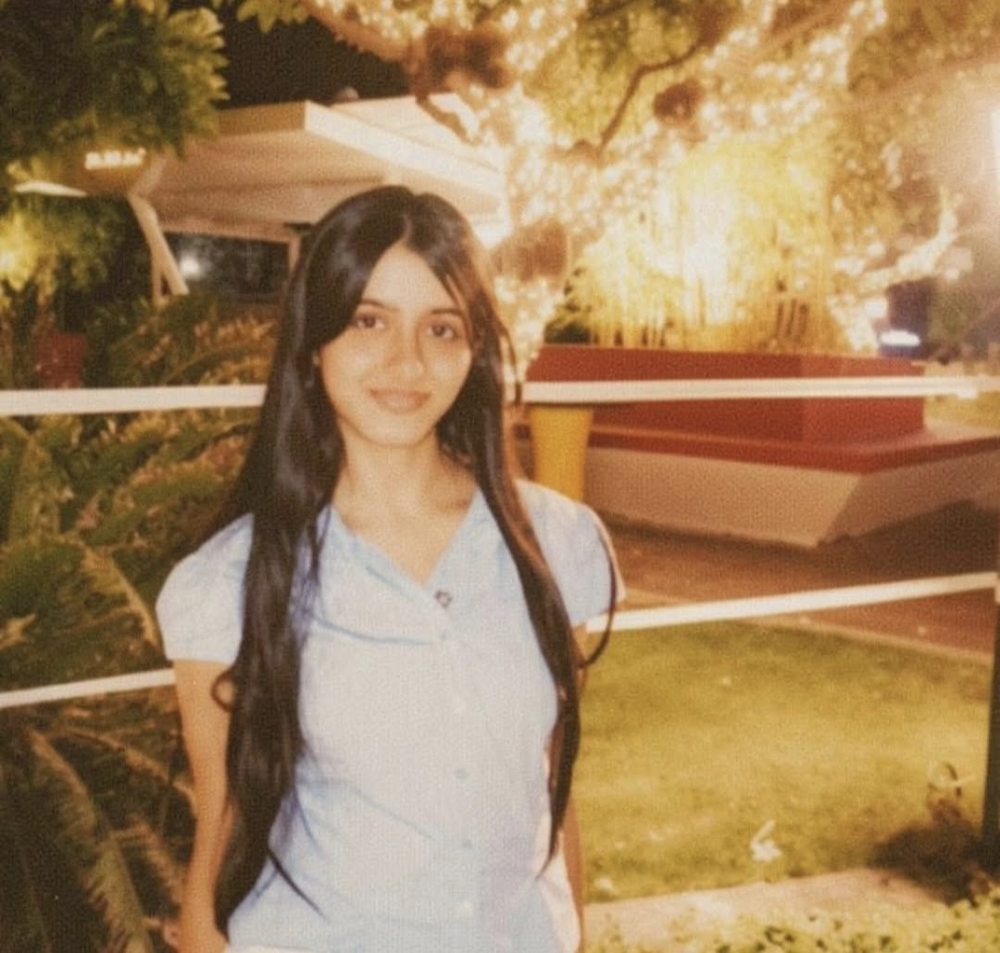
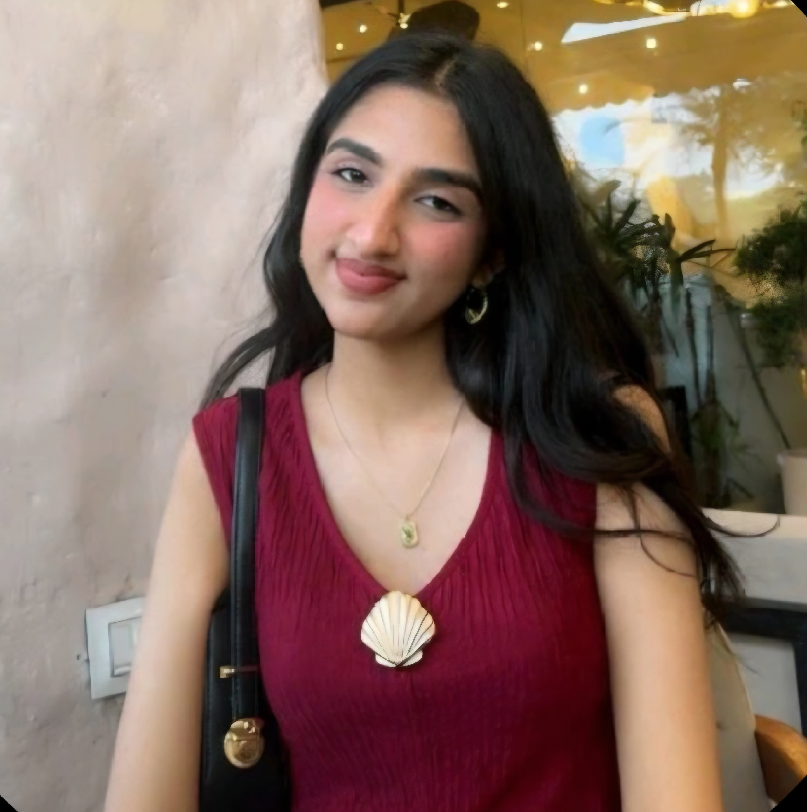

Purvi and Vanshika started The Young Archive and still read every submission that comes in.

A Class 12 PCM student with a strong interest in architecture and design thinking — how creativity and functionality come together to shape meaningful spaces. She brings that same eye for structure and visual communication to how every issue of The Young Archive looks and feels.

A published poet with her own anthology, If I Were The Moon, and a longtime interest in branding and storytelling. She leads the magazine's creative vision — planning, curating, editing and designing each issue herself.
Help shape mood boards, captions and the overall look of each issue's rollout across Instagram.
Apply by emailCut reels and behind-the-scenes content that shows what actually goes into putting an issue together.
Apply by emailBetween reading submissions, laying out issues, and answering DMs, there's a lot that happens beyond what you see on Instagram — mood boards, drafts, and a fair amount of coffee.
From portfolio building to submission reviews — the parts of running a student magazine that never make it to the grid.